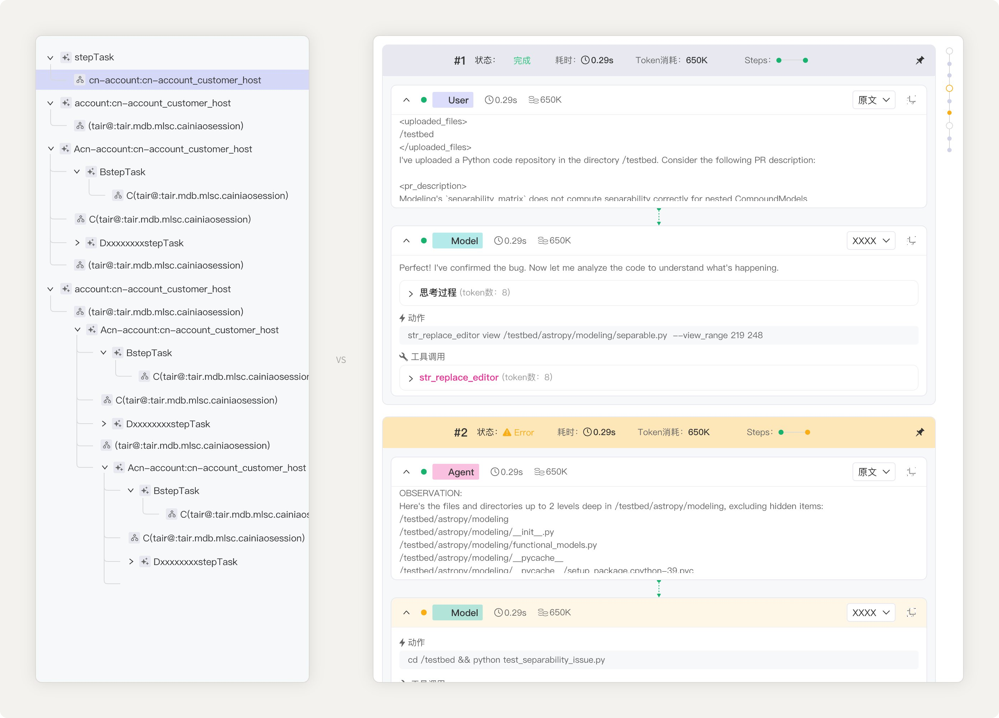
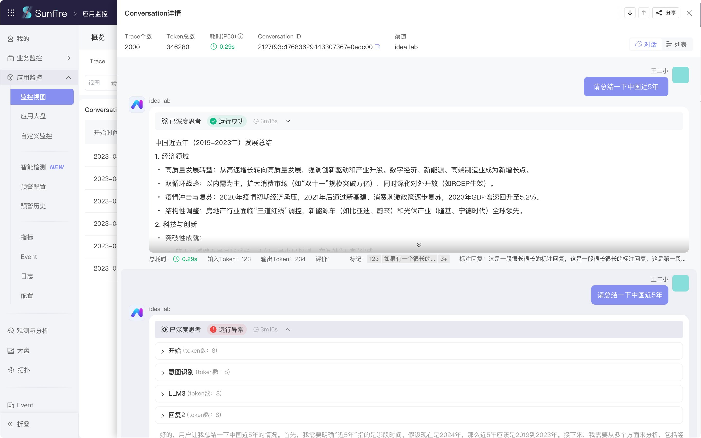
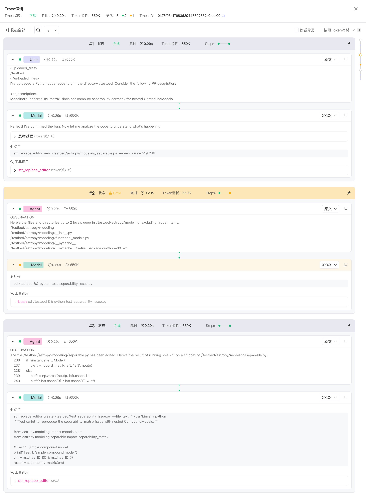
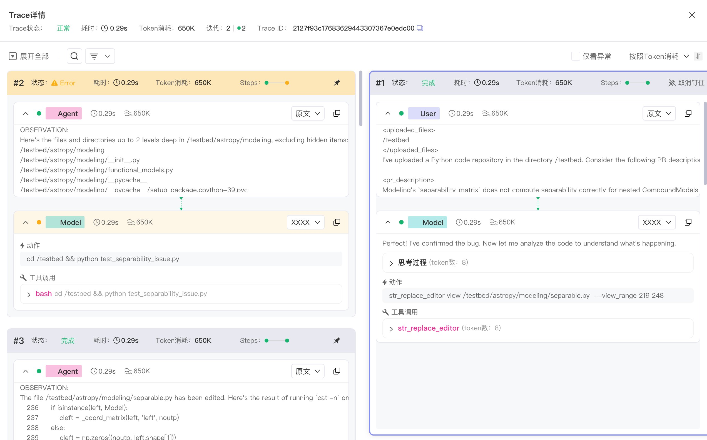
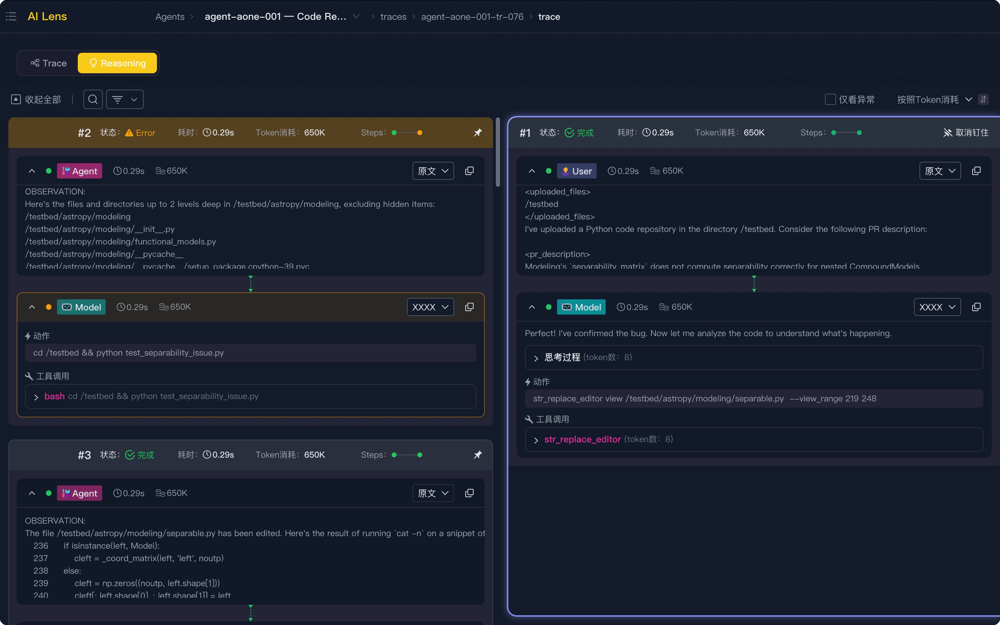

传统工具的盲区
传统 Trace 工具，遇上了 AI 应用
传统 Trace 工具是为微服务时代设计的，AI 应用遇上它，会出现两个结构性的不匹配。
请求穿过多个服务、每个 Span 记录一段调用、工程师在瀑布图上找慢找错——这套设计在它原本的语境里是对的。但 AI 应用的数据结构和这套设计不匹配。

语义层与技术层之间，没有通路
用户看到的是对话内容，后台记录的是 Span 链路，两者之间没有直接对应关系。
工程师看到对话出问题，要在大量 Span 里手工对应、人工翻译——原本分钟级能定位的事，可能要花到小时级。
瀑布图，看不见 Loop 的轮次
AI 应用是 Loop 内的多次 iteration，但传统瀑布图把轮次边界全部展平。
轮次之间的边界是 AI 应用调用结构最核心的边界——展平之后，工程师知道"整体慢了"，但说不出是哪一轮慢的、哪一轮出错的。
新范式
从语义层往下穿
AI 异常的第一层永远在客户端——用户反馈"答得不对"，或者从对话中能直接看出问题。排查的起点应该是这个现场。
这是新范式的核心判断：不是从技术层往上翻，是从语义层往下穿。
下穿路径有两个粒度的入口：Session 粒度（找到出问题的那次对话）和 Trace 内部粒度（看清 Loop 里 iteration 的序列和每个 step 的边界）。
两个 view
Conversation view · Loop view
新范式落地为两个具体设计——Conversation view 承接 Session 粒度，Loop view 承接 Trace 内部粒度。
Conversation view

核心判断：让对话成为入口。 用户感知的对话和后台 Span 链路一一对应，点击某条对话，直接定位到对应的 trace，从语义层进入技术层。
Loop view

核心判断：让轮次成为视觉单位。 iteration 垂直堆叠，独立成块，状态色编码异常。每个 iteration 头部的 Steps 指示器一眼可见出错的 step。
钉住对比

排查中的高频动作是"这一轮和基准轮的差别在哪里"——比如同样输入为何拿到错误输出。Loop view 支持把任意 iteration 钉住为基准，跟其他 iteration 逐一对比。
落地
已上线 · 跨平台
Conversation view 已在 Sunfire 平台上线。Loop view 先在另一平台落地，近期在 Sunfire 平台也上线。
这套范式的核心设计已经跨可观测平台落地——Loop view 在多个平台各自独立落地，初步支持了"范式不依赖单一产品实现细节"的判断（严格的通用性还需更多异构平台验证）。这是把它作为 AI 应用排查通用范式的依据之一。

使用规模
Sunfire 内 · 近 90 天
近 90 天，Trace for AI 在 Sunfire 内的使用规模为：
- 访问次数 236,517 次
- 独立用户 1,845
- 人均访问 128 次（平均不到 1 天一次）
Trace for AI 已经成为 Sunfire 内使用强度最高的可观测能力之一。这组数据能证明什么，需要说清楚：高访问强度直接验证的是 AI 应用链路追踪的需求强度——这个排查方向真实成立、需求高于预期。但使用量本身不足以证明新范式的设计价值（一个急需、且当前唯一的入口，即便设计一般也会被高频使用）；范式设计是否成立，更直接的证据来自它的可迁移性——见 04 节的跨平台落地。
关于 AI 应用可观测的设计范式——
→ 《当 AI 应用出了问题，工程师在看什么》